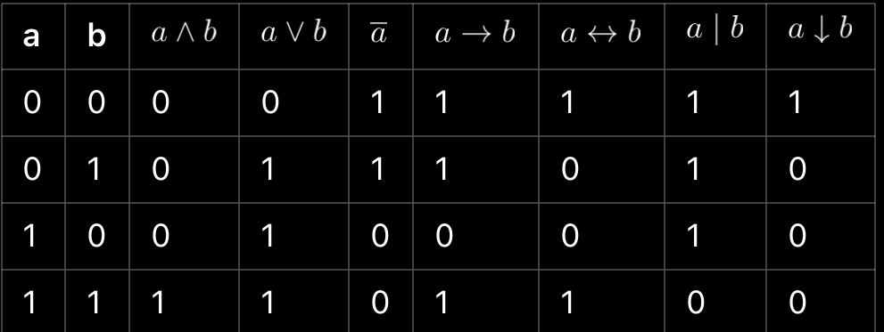

Конспект по Булевой Алгебре и Логическим Функциям
Конспект по Булевой Алгебре и Логическим Функциям
1. Основы Булевой Алгебры
1.1. Определение
Булева алгебра — это математическая структура, изучающая операции с логическими переменными,
которые принимают два значения: 0 (ложь) и 1 (истина). Основными операциями в булевой алгебре являются:
• Конъюнкция (AND, ∧): A ∧ B (истина, если оба A и B истинны).
• Дизъюнкция (OR, ∨): A ∨ B (истина, если хотя бы одно из A или B истинно).
• Отрицание (NOT, ¬): ¬A (истина, если A ложно).
• Импликация (IMP, ⇒): A ⇒ B (ложь, если A истинно, а B ложно; иначе истина).
• Эквиваленция (EQ, ⇔): A ⇔ B (истина, если A и B имеют одинаковые значения).
1.2. Таблица истинности для основных операций

| A | B | A ∧ B | A ∨ B | ¬A | A ⇒ B | A ⇔ B|
|---|---|-------|-------|----|-------|-------|
| 0 | 0 | 0 | 0 | 1 | 1 | 1 |
| 0 | 1 | 0 | 1 | 1 | 1 | 0 |
| 1 | 0 | 0 | 1 | 0 | 0 | 0 |
| 1 | 1 | 1 | 1 | 0 | 1 | 1 |
2. Сложная Дизъюнктивная Форма (СДИФ)
2.1. Определение
Сложная дизъюнктивная форма (СДИФ) — это представление логической функции
как дизъюнкция (логическое «или») конъюнкций (логическое «и») переменных или их отрицаний.
2.2. Пример
Рассмотрим функцию F(A, B, C):
• Пусть F принимает значение 1 для комбинаций (A=1, B=0, C=1) и (A=0, B=1, C=1).
• Сначала запишем соответствующие конъюнкции:
- Для (A=1, B=0, C=1): A ∧ ¬B ∧ C
- Для (A=0, B=1, C=1): ¬A ∧ B ∧ C
• СДИФ будет: F(A, B, C) = (A ∧ ¬B ∧ C) ∨ (¬A ∧ B ∧ C)
2.3. Пошаговое руководство по составлению СДИФ
1. Составьте таблицу истинности функции.
2. Определите строки, для которых функция принимает значение 1.
3. Запишите каждую строку как конъюнкцию переменных (используйте отрицание для переменных, равных 0).
4. Сложите все конъюнкции в дизъюнкцию.
3. Сложная Конъюнктивная Форма (СКИФ)
3.1. Определение
Сложная конъюнктивная форма (СКИФ) — это представление логической функции
как конъюнкция (логическое «и») дизъюнкций (логическое «или») переменных или их отрицаний.
3.2. Пример
Для той же функции F(A, B, C):
• Пусть F принимает значение 0 для комбинаций (A=1, B=0, C=0) и (A=0, B=1, C=0).
• Для этих комбинаций записываем дизъюнкции:
- Для (A=1, B=0, C=0): A ∧ ¬B ∧ ¬C
- Для (A=0, B=1, C=0): ¬A ∧ B ∧ ¬C
• СКИФ будет: F(A, B, C) = (A ∧ ¬B ∧ ¬C) ∧ (¬A ∧ B ∧ ¬C)
3.3. Пошаговое руководство по составлению СКИФ
1. Составьте таблицу истинности функции.
2. Определите строки, для которых функция принимает значение 0.
3. Запишите каждую строку как дизъюнкцию переменных (используйте отрицание для переменных, равных 1).
4. Сложите все дизъюнкции в конъюнкцию.
4. Таблица Истинности
4.1. Определение
Таблица истинности представляет собой таблицу,
показывающую все возможные значения логической функции для всех комбинаций её аргументов.
4.2. Пример для функции F(A, B)
| A | B | F(A, B) |
|---|---|---------|
| 0 | 0 | 0 |
| 0 | 1 | 1 |
| 1 | 0 | 1 |
| 1 | 1 | 1 |
4.3. Пошаговое руководство по составлению таблицы истинности
1. Определите количество переменных.
2.Составьте все возможные комбинации значений для этих переменных.
3. Для каждой комбинации вычислите значение логической функции.
5. Минимум и Максимум
5.1. Минимум
Минимум логической функции — это наименьшее значение,
которое функция может принимать (обычно 0).
5.2. Максимум
Максимум логической функции — это наибольшее значение,
которое функция может принимать (обычно 1).
5.3. Пример
Для функции F(A, B):
• Минимум: 0 (при A=0 или B=0).
• Максимум: 1 (при A=1 и B=1).
6. Фиктивные и Существенные Числа
6.1. Фиктивные числа
Фиктивные числа — это значения, которые не влияют на итоговое значение функции.
Например, в функции F(A, B), если A=0, то значение функции будет зависеть только от B.
6.2. Существенные числа
Существенные числа — это значения, которые влияют на итоговое значение функции.
Например, если оба A и B равны 1 в функции F(A, B), то результат будет 1.
7. РКС (Ракурсная Картографическая Система)
7.1. Определение
РКС может обозначать различные системы для представления данных в нескольких измерениях.
В контексте логики может относиться к методам визуализации логических функций и их взаимосвязей.
8. Нахождение F
8.1. Определение
Для функции F мы можем найти значение, используя композиторные функции F1 и F2.
8.2. Пример
1. Пусть F1(A, B) = A ∧ B и F2(B, C) = B ∨ C.
2. Тогда F(A, B, C) = F1(A, B) ∨ F2(B, C).
8.3. Пошаговое руководство по нахождению F
1. Определите функции F1 и F2.
2. Найдите значение функции F1.
3. Используйте это значение как вход для функции F2 и вычислите F.
9. Разложение Формулы по A
9.1. Определение
Разложение формулы по переменным позволяет упростить логические выражения, выделяя важные компоненты.
9.2. Пример
Для функции F(A, B):
F(A, B) = A ∨ (¬A ∧ B) может быть разложено по A.
9.3. Пошаговое руководство по разложению
1. Определите переменные, по которым будет производиться разложение.
2. Запишите функцию в виде логических операций.
3. Используйте распределительное свойство: A ∨ (B ∧ C) = (A ∨ B) ∧ (A ∨ C).
10. Гиперкуб
10.1. Определение
Гиперкуб — это обобщение куба в n-мерном пространстве,
используемое для представления логических функций с многими переменными.
10.2. Пример
Для 3 переменных A, B, C гиперкуб имеет 8 вершин,
представляющих все возможные комбинации значений переменных:
• (0, 0, 0)
• (0, 0, 1)
• (0, 1, 0)
• (0, 1, 1)
• (1, 0, 0)
• (1, 0, 1)
• (1, 1, 0)
• (1, 1, 1)
10.3. Применение
Гиперкубы помогают визуализировать логические функции
и позволяют использовать методы оптимизации для упрощения логических выражений.